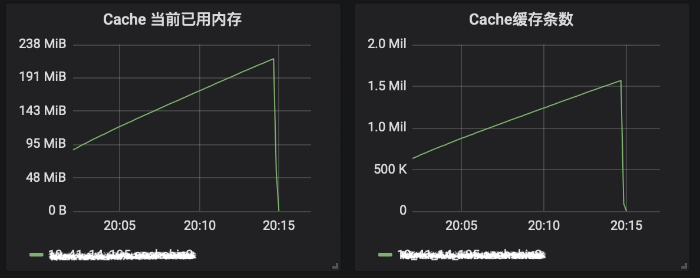
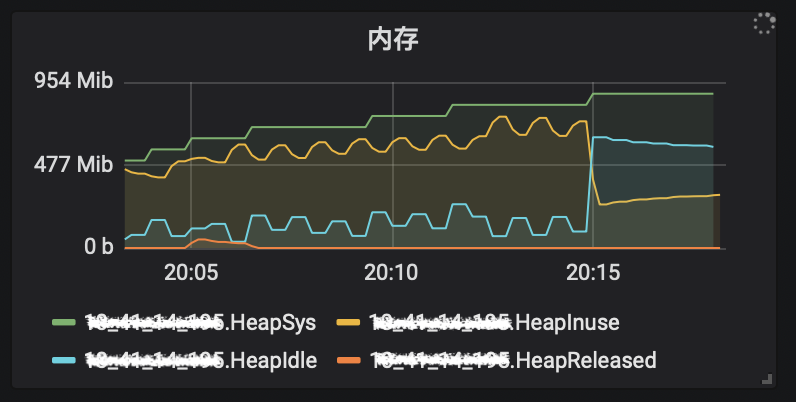
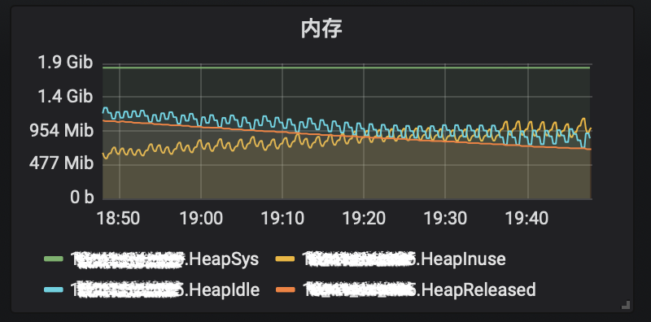

最近遇到一个Go内存不释放的问题，记录一下测试和调研的情况。我到不把它归为Go内存泄漏的问题，因为它和一般的内存泄漏的方式不同。
Go 常见内存泄漏的情况
Go程序可能会在一些情况下造成内存泄漏。go101网站总结了各种内存泄漏的情况，我在这里简单罗列一下：
- 获取长字符串中的一段导致长字符串未释放
- 同样，获取长slice中的一段导致长slice未释放
- 在长slice新建slice导致泄漏
- goroutine泄漏
- time.Ticker未关闭导致泄漏
- Finalizer导致泄漏
- Deferring Function Call导致泄漏
内存回收分析
实际问题
写这篇文章的初衷是我在实现一个新项目的时候遇到一个问题。这个项目使用了一个缓存组件对请求的结果进行缓存，以提高请求的耗时。这个缓存组件对使用的最大内存进行了限制，比如缓存占用的最大内存为1GB。运行过程中可以对这个最大值进行调整，比如我们可以调整到100MB。在调整的过程中发现虽然最大内存从1GB调整到100MB之后，程序的RSS依然占用很大，一直是1GB+ ~ 2GB的内存，感觉内存并没有降下去。
可以看到缓存调小了它占用的内存确实降到几乎为0了:

但是释放的内存并没有返回给操作系统（HeapReleased）

当然经过相应的测试和调研之后，可以看到缓存的最大内存减少后占用内存和RSS也下降了：

仓促之间我只截取了很小一段时间的指标，实际观察很长时间也是这样。
测试程序
我在这个项目中实现了一个 LRU的cache, 这个cache基于内存管理，一旦使用的内存超过了MaxMemory,就会自动进行内存清理工作，将最不常用的缓存项删除，具体实现太长就不贴出来了，基本上就是map + container/list + sync.Mutex的实现，实现的接口如下:
|
|
现在通过一个程序进行测试，分别测试测试前、增加一千万条数据、将最大内存从1G减少到1B、强制垃圾回收四个动作之后的内存的使用情况，代码如下:
|
|
|
首先，我们复习一下Go垃圾回收的日志的意义，再进一步看各个阶段内存的变化。
以这一条为例:
|
|
gc 21: 21是垃圾回收的编号，逐步递增，可能会从1重新开始- `@25.551s`: 自程序开始经历了多少时间,这里是25秒多
6%: 自程序启动花在GC上的CPU时间百分比, CPU 6%花在了GC上0.012+59+0.010 ms clock: GC各阶段的墙上时间(wall-clock),各阶段包括STW sweep termination、concurrent mark and scan、STW mark termination0.050+17/59/0.46+0.043 ms cpu: 各阶段的CPU时间。各阶段同上，其中mark/scan阶段又分成了assist time、background GC time和idle GC time阶段175->207->105 MB: GC开始时、GC结束的heap大小、存活(live)的heap大小191 MB goal:下一次垃圾回收的目标值4 P: 使用的处理器的数量(forced): 强制垃圾回收， 程序中调用runtime.GC()或者类似操作scvg-1: 2740 MB released: gctrace的值大于0时，如果垃圾回收将内存返回给操作系统时，会打印一条summary,包括下一条数据
通过对每一项的介绍，你应该了解了go gc日志的含义，接下来让我们看看我们的测试各阶段的内存占用情况，也就是标记🍀的日志：
|
|
- 在程序刚启动时，内存占用很小， 真正
inuse不到1MB。 - 我们增加了上万条数据，每条数据光数就
1KB,如果加上key的大小，以及管理cache的一些数据结构的额外开销，占用就比较大了，粗略统计inuse的占用就达到了1GB以上，idle的span的字节数不到1GB,从操作系统获得了2GB的内存，没有内存返回。可以看到cache使用的内存粗算为1023MB。 - 我们将cache的最大内存设置为1B,这会触发cache对象的清理工作，因为最大内存很小，导致后续的增加缓存操作实际并不会缓存对象，可以看到缓存的实际大小为0B。可以看到
inuse讲到了156MB,我们可以把它看作额外的一些开销，实际上开始添加的对象都被回收掉了。idle span的字节数达到了2GB,但是并没有内存返还给操作系统。这会导致操作系统认为这个程序占用内存达到2GB,linux服务器上有可能会导致OOM killer杀掉这个程序。 - 我们进行了一次强制垃圾回收(实际调用
debug.FreeOSMemory()，它会进行一次强制垃圾回收)，可以看到虽然idle span的值还是2GB+,但是实际其中的2GB+的大小返还给操作系统了，如果这个时候你能够通过top观察程序的内存使用的话，可以看到这个程序的RES占用很小了。
top命令中关于程序使用内存的项介绍：
%MEM：Memory usage (RES) 内存占用
使用的物理内存VIRT：Virtual Image (kb) 虚拟镜像
总虚拟内存的使用数量SWAP：Swapped size (kb)
非驻留但是存在于程序中的内存，虚拟内存减去物理内存RES：Resident size (kb)
非swap的物理内存SHR：Shared Mem size (kb)
程序使用的共享内存，可以被其它进程所共享
可以看到，当对象释放的时候，释放出来的内存并没有立即返还给操作系统，而在我们进行了一次强制垃圾回收后才返还。 Go语言把返还的过程叫做scavenging (拾荒)。这个拾荒的算法一直在演化，可以查看issue #16930，相关的优化提案可以参考:issue #30333。
原先的scavenging是每隔几分钟(5分钟)执行一次拾荒操作，保证程序使用的内存和RSS基本一致。后来在1.11、1.12的演化过程中，改成了"智能"的拾荒操作。目标是尽量避免全部返还给操作系统导致的很重的重获取的花销，但是这也带来了一个问题，那就是当前的拾荒设计对于偶尔一个尖峰，并不会将不用的大量内存返还给操作系统，也就是本文一开始我在项目中遇到的问题。这个问题在issue中也有讨论：
Thus, I propose the following heuristic, borrowed from #16930: retain C*max(heap goal, max(heap goal over the last N GCs))
What happens in an application that has a huge heap spike (say, an initial loading phase) and then the heap drops significantly? In particular, let's say this is drastic enough that the runtime doesn't even notice the drop until a 2 minute GC kicks in. At that scale, it could take a while for N GCs to pass, and we won't reclaim the heap spike until they do.
This is something that came to my mind recently too. An alternative is to set a schedule to decrease the scavenge goal linearly, or according to a smoothstep function, which goes to zero over N GCs. If this schedule ever gets below C * the heap goal, we use that instead. We'll get smoother cliffs in general and still make progress in the case you describe. Smoothstep is preferred here since we won't over-fit to transient drops in heap size, but this also means we might be slower to react in the case you described. I prefer not to over-fit here because that carries a performance cost.
这是一个坑，不幸踩到了。我们这个项目的需求就是运维人员有时候可以将缓存使用的最大内存设置一个比较小的数，设置之后，go运行时不触发拾荒事件，就会导致内存被大量占用而不返还给操作系统。
目前我的修改是在cache的最大内存调小后执行一次debug.FreeOSMemory(),这样可以保证不用的一些内存返还给操作系统。当然执行这个操作也是有代价的：
- Returning all free memory back to the underlying system at once is expensive, and can lead to latency spikes as it holds the heap lock through the whole process.
- It’s an invasive solution: you need to modify your code to call it when you need it.
- Reusing free chunks of memory becomes more expensive. On UNIX-y systems that means an extra page fault (which is surprisingly expensive on some systems).
Go 1.13中对拾荒的实现有进行了改进，而且Go 1.13也快发布了，发布之后我再做进一步的测试，尽量避免使用debug.FreeOSMemory()。
runtime.MemStats
通过runtime.MemStats可以实时的获取Go运行时的内存统计信息，这个数据结构包含很多的字段。字段虽然很多，但是由于文档还是不够详细，如果没有深入理解Go语言内部的实现方式和相关的概念的话，不容易理解这个数据结构具体的含义，只根据字面值去理解很容易误用， 比如HeapIdle并不是Go占用的还没有释放的内存空间，其中的HeapReleased其实已经返还给操作系统了。
我将各个字段的中文解释列在了这里，如果你要监控go运行时的内存，需要仔细阅读相关的字段的解释。
|
|
Go运行时的内存分配算法可以查看文章: A visual guide to Go Memory Allocator from scratch (Golang) , 或者中文翻译: Go 内存分配器可视化指南，这是目前第一篇全面介绍Go运行时内存管理的文章。
runtime.SetGCPercent
GOGC设置垃圾回收的目标百分比。什么时候会触发Go运行时的垃圾回收操作呢，主要靠这个值。当这次新分配的数据和上一次垃圾回收后存活数据之比达到这个数值之后就会触发一次垃圾回收。
GOGC的默认值是100。设置GOGC=off会禁止垃圾回收。
你也可以通过代码设置这个参数，调用runtime.SetGCPercent进行设置。
MADV
MADV是Linux的一个特性，，可以看相关的介绍：MADV_FREE functionality
一直以来 go 的 runtime 在释放内存返回到内核时，在 Linux 上使用的是 MADV_DONTNEED，虽然效率比较低，但是会让 RSS（resident set size 常驻内存集）数量下降得很快。不过在 go 1.12 里专门针对这个做了优化，runtime 在释放内存时，使用了更加高效的 MADV_FREE 而不是之前的 MADV_DONTNEED。这样带来的好处是，一次 GC 后的内存分配延迟得以改善，runtime 也会更加积极地将释放的内存归还给操作系统，以应对大块内存分配无法重用已存在的堆空间的问题。不过也会带来一个副作用：RSS 不会立刻下降，而是要等到系统有内存压力了，才会延迟下降。需要注意的是，MADV_FREE 需要 4.5 以及以上内核，否则 runtime 会继续使用原先的 MADV_DONTNEED 方式。当然 go 1.12 为了避免像这样一些靠判断 RSS 大小的自动化测试因此出问题，也提供了一个 GODEBUG=madvdontneed=1 参数可以强制 runtime 继续使用 MADV_DONTNEED：runtime: provide way to disable MADV_FREE。
相关issue和资料
这里列出了Go官方库中的一些内存泄漏相关的issue,以及关于Go内存泄漏的一些文章，感兴趣的同学可以进一步阅读。
- https://golang.org/pkg/runtime/#MemStats
- https://github.com/golang/go/issues/33684
- https://github.com/golang/go/issues/33376
- https://github.com/golang/go/issues/32284
- https://github.com/golang/go/issues/16843
- https://github.com/golang/go/issues/14521
- https://go101.org/article/memory-leaking.html
- http://play.golang.org/p/Nb39COQgxr
- https://www.freecodecamp.org/news/how-i-investigated-memory-leaks-in-go-using-pprof-on-a-large-codebase-4bec4325e192/
- https://medium.com/dm03514-tech-blog/sre-debugging-simple-memory-leaks-in-go-e0a9e6d63d4d
- https://github.com/golang/go/issues/16930
- https://github.com/golang/go/issues/30333
- https://go-review.googlesource.com/c/go/+/135395/
- https://github.com/golang/go/issues/23687
- https://ms2008.github.io/2019/06/30/golang-madvfree/
- https://golang.org/doc/go1.12#runtime